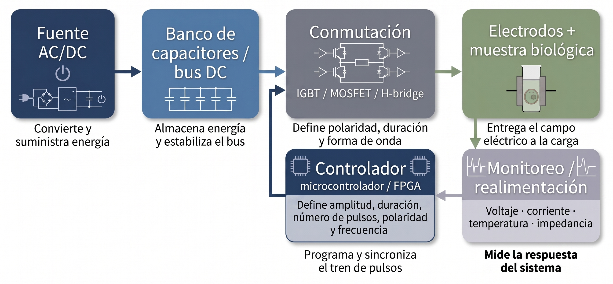
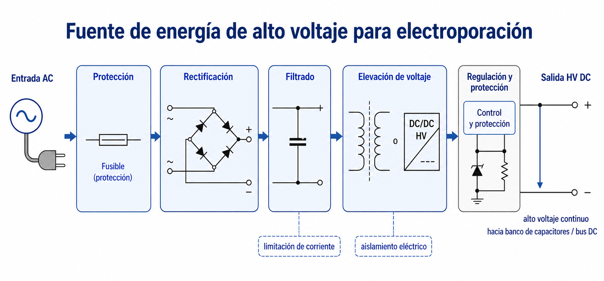
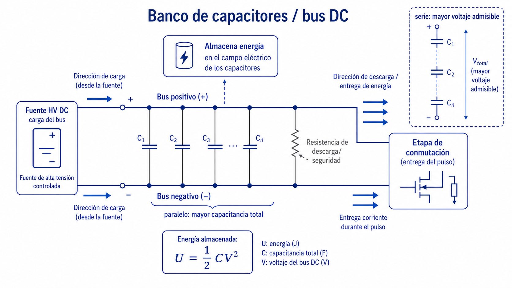
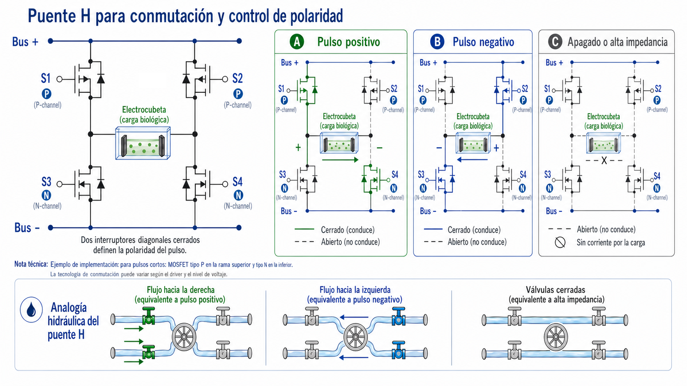
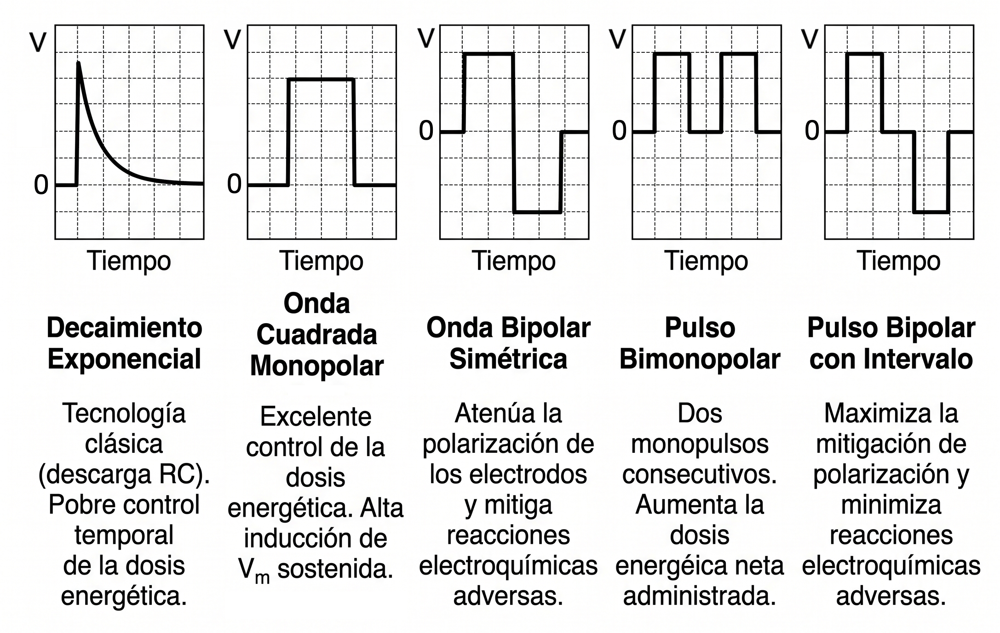
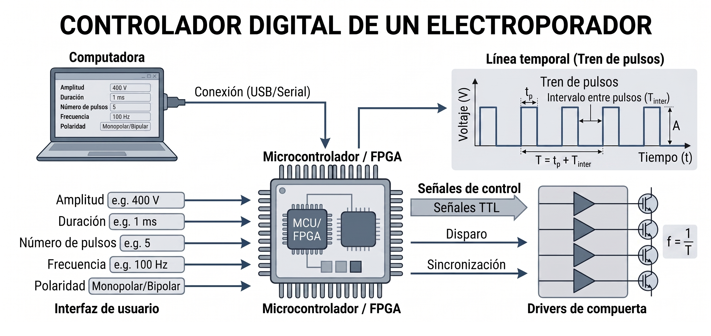
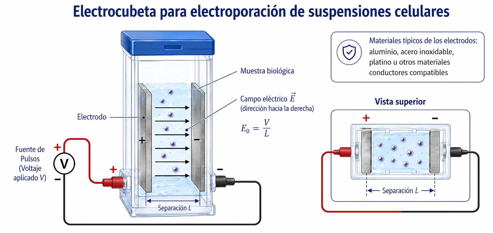
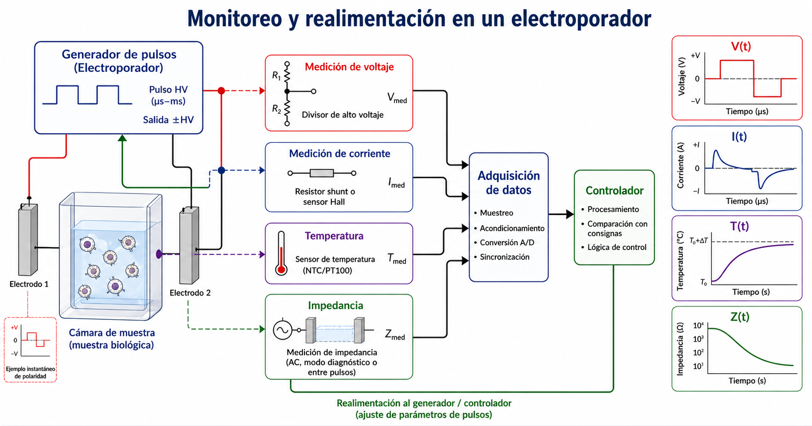

Tecnología del electroporador
Arquitectura funcional de un sistema de pulsos eléctricos
1 Propósito del módulo
Un electroporador no es simplemente una fuente de alto voltaje. Es un sistema diseñado para entregar pulsos eléctricos controlados a una muestra biológica bajo condiciones reproducibles y seguras.
Este módulo presenta la arquitectura funcional básica de un electroporador y conecta sus componentes con las variables físicas estudiadas en los módulos anteriores.
2 Función general
Un electroporador debe ser capaz de controlar:
- amplitud del pulso;
- duración;
- número de pulsos;
- frecuencia o intervalo entre pulsos;
- polaridad;
- forma de onda;
- energía entregada;
- corriente;
- condiciones de seguridad y monitoreo.
La Figura 1 resume la arquitectura funcional de un electroporador moderno. Aunque existen muchas configuraciones instrumentales, la mayoría de los sistemas puede entenderse como una cadena de conversión, almacenamiento, conmutación, control, entrega del campo eléctrico y monitoreo de la respuesta de la muestra.

3 Bloques funcionales principales
Un sistema de electroporación típico puede dividirse en seis bloques funcionales:
| Bloque | Función |
|---|---|
| Fuente AC/DC | convierte y suministra energía eléctrica al sistema |
| Banco de capacitores o bus DC | almacena energía y estabiliza la entrega |
| Conmutación rápida | define polaridad, duración y forma de onda |
| Controlador digital | programa amplitud, duración, número de pulsos y sincronización |
| Electrodos y muestra | entregan el campo eléctrico al sistema biológico |
| Monitoreo y realimentación | mide la respuesta eléctrica y térmica de la muestra |
Estos bloques no deben interpretarse como piezas aisladas. En un electroporador real, la fuente, el banco de capacitores, la etapa de conmutación, la carga biológica y el sistema de control forman un sistema acoplado. Por eso, el protocolo eléctrico aplicado a la muestra depende tanto del diseño electrónico como de las propiedades eléctricas del medio biológico.
4 Fuente de energía
La fuente convierte la energía de entrada en una señal eléctrica adecuada para alimentar el sistema de pulsos.
Dependiendo del diseño, puede incluir:
- conversión AC/DC;
- rectificación;
- filtrado;
- elevación de voltaje mediante convertidores DC/DC o transformadores;
- regulación;
- protección contra sobrecorriente;
- aislamiento eléctrico;
- descarga segura del sistema.
La Figura 2 ilustra una fuente de alto voltaje de manera conceptual. En equipos de electroporación, la fuente no suele aplicar directamente el pulso final a la muestra. Su función principal es cargar el bus DC o el banco de capacitores hasta un voltaje definido por el protocolo experimental.

En términos prácticos, los voltajes de trabajo dependen de la aplicación y de la separación entre electrodos. Para suspensiones celulares en cubetas, se pueden requerir desde decenas hasta miles de voltios, porque el campo eléctrico promedio se estima como:
\[ E_0 \approx \frac{V}{L} \]
donde \(V\) es el voltaje aplicado y \(L\) es la separación entre electrodos.
5 Banco de capacitores o bus DC
El banco de capacitores almacena energía eléctrica antes de liberarla durante el pulso.
La energía almacenada en un capacitor ideal es:
\[ U = \frac{1}{2}CV^2 \]
donde \(C\) es la capacitancia y \(V\) el voltaje de carga.
La Figura 3 muestra el principio general de un banco capacitivo. Varios capacitores pueden conectarse en paralelo para aumentar la capacitancia total y, por tanto, la energía disponible para el pulso. También pueden conectarse en serie cuando se necesita soportar mayor voltaje, aunque esto requiere balanceo de voltaje entre capacitores.

Este bloque es importante porque muchos pulsos de electroporación requieren entregar energía en tiempos muy cortos. La fuente por sí sola puede no responder con suficiente rapidez, mientras que el banco de capacitores permite liberar energía de manera controlada.
En un diseño real, la elección de la capacitancia depende de:
- voltaje de operación;
- energía requerida por pulso;
- duración del pulso;
- corriente máxima esperada;
- impedancia de la carga biológica;
- caída aceptable de voltaje durante el pulso;
- requisitos de seguridad.
6 Conmutación rápida
La etapa de conmutación define cuándo, durante cuánto tiempo y con qué polaridad se aplica el pulso.
Puede implementarse mediante dispositivos de potencia como:
- MOSFET;
- IGBT;
- tiristores;
- configuraciones tipo puente H;
- interruptores especializados de alta tensión.
La Figura 4 muestra una configuración tipo puente H. En esta arquitectura, cuatro interruptores electrónicos permiten aplicar a la carga una polaridad positiva, una polaridad negativa o estados de desconexión, según la combinación de interruptores activados.

La analogía hidráulica ayuda a entender el puente H: los interruptores funcionan como válvulas. Al abrir una pareja de válvulas, el flujo atraviesa la carga en un sentido; al abrir la pareja opuesta, el flujo atraviesa la carga en sentido contrario. En electrónica, ese “flujo” corresponde a la corriente eléctrica y la “carga” corresponde a la muestra entre electrodos.
La capacidad de la etapa de conmutación se define por parámetros como:
- voltaje máximo soportado;
- corriente máxima conducida;
- velocidad de conmutación;
- pérdidas de potencia;
- aislamiento de la etapa de control;
- protección contra cortocircuitos;
- capacidad de disipar calor.
La Figura 5 muestra que distintas configuraciones de conmutación permiten generar formas de onda con efectos físicos diferentes. La forma temporal del pulso modifica la dosis eléctrica, la polarización de electrodos, la carga de membrana y la posibilidad de usar protocolos monopolares o bipolares.

7 Control digital
El controlador programa y sincroniza el protocolo eléctrico.
Puede controlar:
- amplitud;
- duración;
- número de pulsos;
- polaridad;
- intervalo entre pulsos;
- frecuencia;
- secuencias complejas;
- disparo sincronizado con mediciones.
La Figura 6 representa el controlador como la etapa que traduce un protocolo definido por el usuario en señales de disparo para la electrónica de potencia. En equipos modernos, este bloque puede implementarse mediante microcontroladores, FPGA, tarjetas de adquisición de datos o sistemas embebidos conectados a una computadora.

La diferencia entre un generador simple y un electroporador avanzado está, en gran parte, en la precisión del control temporal. Un pulso de microsegundos o nanosegundos exige sincronización más estricta que un pulso de milisegundos. Por ello, los controladores pueden requerir temporización de alta resolución y aislamiento entre la etapa lógica y la etapa de potencia.
8 Electrodos y muestra biológica
Los electrodos son la interfaz entre el equipo y la muestra. Su geometría determina cómo se distribuye el campo eléctrico.
En una aproximación simple, para electrodos planos separados una distancia \(L\), el campo promedio puede estimarse como:
\[ E_0 \approx \frac{V}{L} \]
donde \(V\) es la diferencia de potencial aplicada y \(L\) la separación entre electrodos.
La Figura 7 muestra una electrocubeta típica para suspensiones celulares. En este diseño, la muestra líquida se ubica entre dos electrodos planos separados por una distancia conocida. Esa separación permite estimar el campo eléctrico promedio a partir del voltaje aplicado.

En la práctica, los electrodos deben elegirse considerando:
- biocompatibilidad;
- resistencia a corrosión;
- baja polarización interfacial;
- facilidad de limpieza o esterilización;
- estabilidad frente a pulsos de alta corriente;
- geometría reproducible.
Los materiales pueden incluir acero inoxidable, aluminio, platino u otros conductores compatibles con la aplicación. La separación entre electrodos es crítica, porque una misma diferencia de potencial produce campos distintos si cambia \(L\).
Sin embargo, en geometrías reales, el campo puede ser no uniforme, especialmente cerca de bordes, puntas, agujas o interfaces de tejido.
9 Monitoreo y retroalimentación
Un electroporador avanzado puede monitorear variables como:
- voltaje aplicado;
- corriente;
- impedancia de la muestra;
- temperatura;
- energía entregada;
- cambios transitorios durante el pulso.
La Figura 8 resume las mediciones más relevantes. Estas señales permiten verificar si el pulso aplicado corresponde al protocolo programado y si la muestra cambia sus propiedades eléctricas durante la permeabilización.

Estas mediciones son importantes porque la muestra biológica no es una carga puramente resistiva ni constante. Su impedancia puede cambiar durante la permeabilización, y la corriente medida puede diferir de la esperada si hay burbujas, mala conexión, cambios de conductividad, calentamiento o alteraciones en la geometría efectiva de contacto.
La corriente y el voltaje permiten estimar la potencia eléctrica instantánea:
\[ P(t)=V(t)I(t) \]
y, por integración temporal, la energía entregada:
\[ U = \int P(t)\,dt = \int V(t)I(t)\,dt \]
Estas magnitudes son útiles para relacionar el protocolo eléctrico con la dosis aplicada y el posible calentamiento del sistema.
10 Seguridad y reproducibilidad
El uso de pulsos de alto voltaje exige condiciones de seguridad estrictas:
- aislamiento eléctrico;
- descarga segura de capacitores;
- protección del usuario;
- control de corriente;
- bloqueo de operación ante fallas;
- verificación de conexiones;
- registro de parámetros.
Desde el punto de vista científico, la reproducibilidad exige reportar claramente:
- geometría de electrodos;
- separación entre electrodos;
- voltaje aplicado;
- campo estimado;
- duración del pulso;
- número de pulsos;
- frecuencia o intervalo entre pulsos;
- forma de onda;
- conductividad del medio;
- temperatura;
- tipo de célula o tejido.
11 Conexión con los modelos físicos
Los módulos anteriores permiten interpretar lo que hace el equipo:
| Variable del equipo | Variable física relacionada |
|---|---|
| Voltaje aplicado | campo externo \(E_0\) |
| Separación de electrodos | estimación de \(E_0\) |
| Duración del pulso | carga RC de membrana |
| Forma de onda | polarización y respuesta temporal |
| Número de pulsos | dosis acumulada |
| Corriente | disipación Joule |
| Temperatura | daño térmico potencial |
| Impedancia de la muestra | cambio eléctrico asociado al estado de la carga biológica |
El electroporador, por tanto, es el instrumento que convierte los modelos físicos en protocolos experimentales.